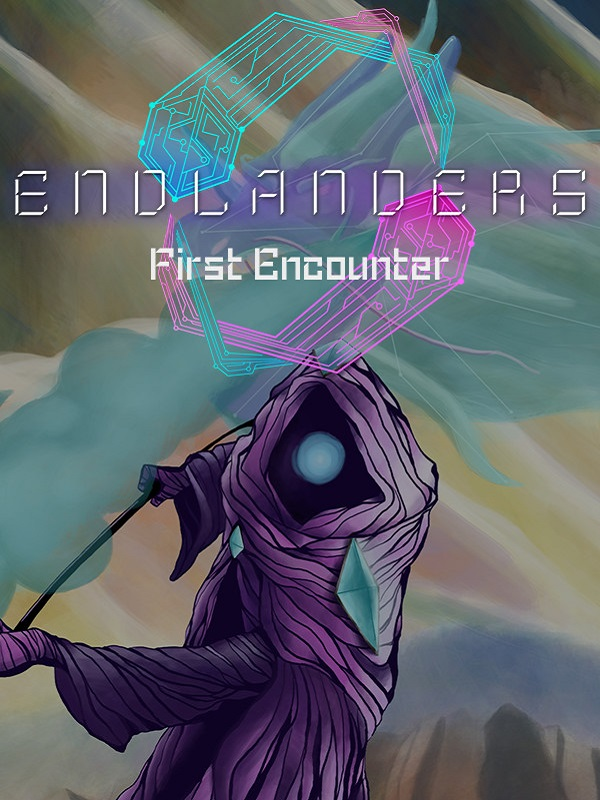

Endlanders : First Encounter
Endlanders : First Encounter
Details
|  | |
| Playtime | 1h 3m 0s |
| Last Activity | Never |
| Added | 12/30/2023 6:40:47 |
| Modified | 12/31/2023 8:35:22 |
| Completion Status | Played |
| Library | Steam |
| Source | Steam |
| Platform | PC (Windows) |
| Release Date | 6/4/2022 |
| Community Score | |
| Critic Score | |
| User Score | |
| Genre | Indie Role-playing (RPG) |
| Developer | Eteros Studios |
| Publisher | Eteros Studios GrabTheGames |
| Feature | Single Player |
| Links | Steam Twitch |
| Tag | |
Description
Build your deck, glitch through enemies, translate unknown languages and decipher the mysteries of this universe, in this grid-based real time combat indie game.
Endlanders features two main characters with diverging storylines in the same universe, fighting and exploring their way through vastly different planes with anachroninstic themes.
The game features :
A grid-based real time combat, where our two characters have distinct gameplay styles :

Fast-paced tension, with multiple spells and a huge variety of enemies :

A deck-building system, where cards are instant spells :

And a translation system, where by collecting runes the player will be able to advance the story further :


Glitching through terrain and objects to find hidden areas :

The game takes place across many planes, and each character visits a few of them, exploring, researching and trying to understand a strange substance called Source, which appears on all living (and some times not) lifeforms. Players will keep their thoughts on their log which is updated throughout the game through interactions.
Each character analyzes the mysteries of this substance in their own manner, offering different insights.
Our two playable characters are :

Cosmos, who has a more combo-oriented fast combat style, and their attacks emphasize by building combo points using "Tempo" cards, and using "Finisher" cards that deal more damage based on the amount of combo points. However if some time passes and they haven't landed a hit, the combo points reset to zero, and since finisher cards deal most of the damage, starting a combo but letting it fall flat will decrease the damage output.
Cosmos is more concerned with the "why" questions regarding this substance, and their log has entries that explore themes of purpose, faith and existentialism.

and Quls, who has a more reactive calculated combat style, and their attacks fill the tank with gas by using "Combiner" cards, or deplete it by using "Diffusant" cards. However being at the edges (full tank or empty tank) might cause unexpected outcomes, such as explosions or debuffs, so the player need to be careful. Being at edges however has its own rewards, since Quls's attacks deal more damage if their chemtank is empty or full.
Quls is more concerned with the "how" questions regarding this substance, and their log has entries that revolve around how to use this substance, how to create it, and it's interactions.
Our characters could be conceived as binary opposites on their thoughts and actions, however the more players indulge on the story the more they will understand that things are more complicated.
The prologue only features the first plane and only 1 playable character, Cosmos.
Endlanders features two main characters with diverging storylines in the same universe, fighting and exploring their way through vastly different planes with anachroninstic themes.
The game features :
A grid-based real time combat, where our two characters have distinct gameplay styles :
Fast-paced tension, with multiple spells and a huge variety of enemies :
A deck-building system, where cards are instant spells :
And a translation system, where by collecting runes the player will be able to advance the story further :
Glitching through terrain and objects to find hidden areas :
The game takes place across many planes, and each character visits a few of them, exploring, researching and trying to understand a strange substance called Source, which appears on all living (and some times not) lifeforms. Players will keep their thoughts on their log which is updated throughout the game through interactions.
Each character analyzes the mysteries of this substance in their own manner, offering different insights.
Our two playable characters are :
Cosmos, who has a more combo-oriented fast combat style, and their attacks emphasize by building combo points using "Tempo" cards, and using "Finisher" cards that deal more damage based on the amount of combo points. However if some time passes and they haven't landed a hit, the combo points reset to zero, and since finisher cards deal most of the damage, starting a combo but letting it fall flat will decrease the damage output.
Cosmos is more concerned with the "why" questions regarding this substance, and their log has entries that explore themes of purpose, faith and existentialism.
and Quls, who has a more reactive calculated combat style, and their attacks fill the tank with gas by using "Combiner" cards, or deplete it by using "Diffusant" cards. However being at the edges (full tank or empty tank) might cause unexpected outcomes, such as explosions or debuffs, so the player need to be careful. Being at edges however has its own rewards, since Quls's attacks deal more damage if their chemtank is empty or full.
Quls is more concerned with the "how" questions regarding this substance, and their log has entries that revolve around how to use this substance, how to create it, and it's interactions.
Our characters could be conceived as binary opposites on their thoughts and actions, however the more players indulge on the story the more they will understand that things are more complicated.
The prologue only features the first plane and only 1 playable character, Cosmos.